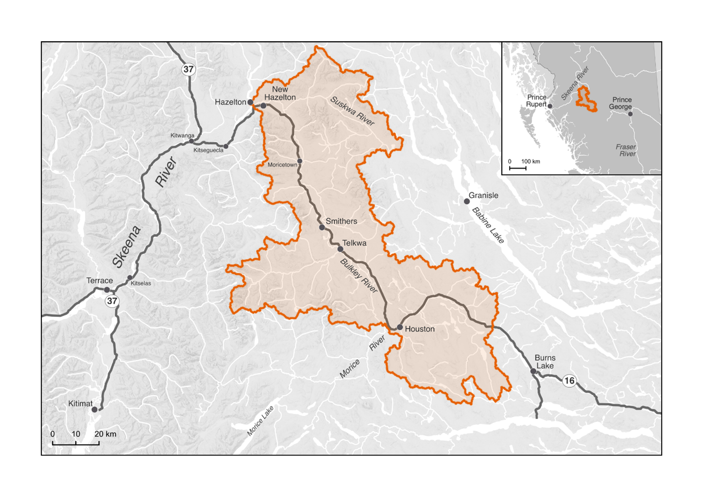
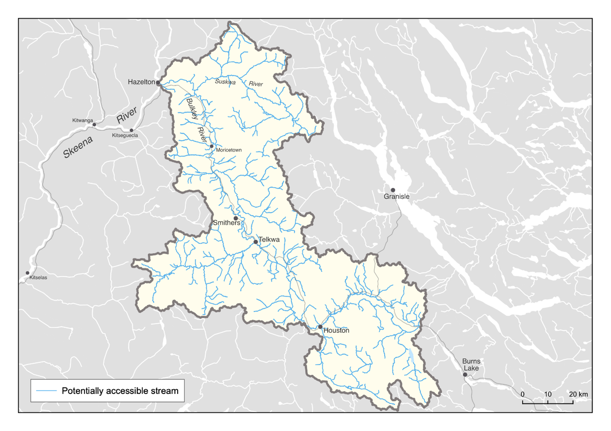

| Gitxsanimax | Witsuwit'en | Common Name | Scientific Name |
|---|---|---|---|
| Ya’aa | Ggïs | Chinook Salmon | Oncorhynchus tshawytscha |
| Eek | Deedzex | Coho Salmon | Oncorhynchus kisutch |
| Mi’soo | Taalook | Sockeye Salmon | Oncorhynchus nerka |
| Milit | Tësdlï | Steelhead | Oncorhynchus mykiss |
Connectivity Plan Purpose and Approach
The following Watershed Connectivity Remediation Plan (WCRP) represents the culmination of a one-year collaborative planning effort for the Bulkley River watershed (excluding the Morice River, see Figure 1), the overall aim of which is to clarify and reduce the threat of aquatic barriers to anadromous salmonids and the livelihoods that they support, including the values and laws of First Nations, as well their continued sustenance, cultural, and ceremonial needs both now and into the future. This 10-year plan was developed to identify priority actions that the Bulkley River WCRP planning team (see Table 1 for a list of team members) will undertake between 2021-2031 to conserve and restore fish passage in the watershed through strategies aimed at barrier remediation, barrier prevention, and strengthening Indigenous connections to land and water.
WCRPs are long-term, actionable plans that blend local stakeholder and rightsholder knowledge with innovative GIS analyses to gain a shared understanding of where remediation efforts will have the greatest benefit for anadromous salmonids. The planning process is inspired by the Conservation Standards (v.4.0), which is a conservation planning framework that allows planning teams to systematically identify, implement, and monitor strategies to apply the most effective solutions to high priority conservation problems. There is a rich history of connectivity and fish passage planning and remediation work in the Bulkley River watershed that this WCRP builds upon, including the work undertaken by the BC Fish Passage Technical Working Group, the Skeena Fisheries Commission, the Office of the Wet’suwet’en, the Wet’suwet’en First Nation, and the Society for Ecosystem Restoration in Northern British Columbia (SERNbc) among others (Wilson and Rabnet. (2007), McCarthy and Fernando (2015), Smith (2018), Casselman and Stanley (2010), A. Irvine (2018)). The Canadian Wildlife Federation will continue to engage and coordinate with local partners and existing initiatives, in part through the Skeena Environmental Stewardship Initiative. SERNbc is also currently undertaking undertaking fish passage work in the Bulkley River watershed, with some overlap and some differences in scope compared to the work and processes described in this WCRP. The SERNbc project relies on expert knowledge and field assessments in both the Bulkley and Morice watersheds to improve passage for all fish, including fluvial and resident species, and focuses on stream crossings that act as barriers (Irvine (2018)). This WCRP focuses specifically on improving connectivity for anadromous salmonid species and uses consensus-based planning exercises and spatial model implementation to develop watershed-scale status assessments, goal setting, and prioritization for multiple barrier types. SERNbc and the WCRP planning team are currently collaborating on the development of the bcfishpass connectivity model and will continue to work together to promote coordination and collaboration between the two initiatives moving forward.
The planning team compiled existing barrier location and assessment data, habitat data, and previously identified priorities, and combined this with local and Indigenous knowledge to create a strategic watershed-scale plan to improve connectivity. To expand on this work, the Bulkley River WCRP planning team applied the WCRP planning framework to define the “thematic” scope of freshwater connectivity and refine the “geographic” scope to identify those portions of the watershed where barrier prioritization will be conducted, and subsequent remediation efforts will take place. Additionally, the team selected target fish species, assessed their current connectivity status in the watershed, defined concrete goals for gains in connectivity, and developed a priority list of barriers for remediation to achieve those goals. While the current version of this plan is based on the best-available information at the time of publishing, WCRPs are intended to be “living plans” that are updated regularly as new information becomes available, or if local priorities and contexts change. As such, this document should be interpreted as a current “snap-shot” in time, and future iterations of this WCRP will build upon the material presented in this plan to continuously improve aquatic barrier remediation for migratory fish in the Bulkley River watershed. For more information on how WCRPs are developed, see N. Mazany-Wright et al. (2021c).
Vision Statement
Healthy, well-connected streams and rivers within the Bulkley River watershed support thriving populations of migratory and resident fish. In turn, these fish provide the continued sustenance, cultural, and ceremonial needs of the Wet’suwet’en and Gitxsan peoples, as they have since time immemorial. First Nations, residents, and visitors to the watershed work together for environmental stewardship to clarify, implement, and assess the effectiveness of actions to mitigate the negative effects of aquatic barriers, improving the resiliency of streams and rivers for the benefit and appreciation of all.
Project Scope
Connectivity is a critical component of freshwater ecosystems that encompasses a variety of factors related to ecosystem structure and function, such as the ability of aquatic organisms to disperse and/or migrate, the transportation of energy and matter (e.g., nutrient cycling and sediment flows), and temperature regulation (Seliger and Zeiringer (2018).). Though each of these factors are important when considering the health of a watershed, for the purposes of this WCRP the term “connectivity” is defined as the degree to which aquatic organisms can disperse and/or migrate freely through freshwater systems. Within this context, connectivity is primarily constrained by physical barriers including anthropogenic infrastructure such as dams, weirs, and stream crossings, and natural features such as waterfalls and debris flows. This plan is intended to focus on the direct remediation and prevention of localized, physical barriers instead of the broad land-use patterns that are causing chronic connectivity issues in the watershed. The planning team decided that the primary focus of this WCRP is addressing barriers to longitudinal connectivity (i.e., along the upstream-downstream plane) due to the magnitude of the threat posed by linear development (i.e., road and rail lines) in the watershed.

The primary geographic scope of this WCRP is the Bulkley River watershed, located in the mid-eastern portion of the Skeena River drainage basin in northwestern British Columbia (Figure 1). The scope constitutes the Bulkley River “watershed group” as defined by the British Columbia Freshwater Atlas (FWA). A consistent spatial framework was necessary to undertake a watershed-selection process at the provincial scale to identify target watersheds to improve connectivity for salmonids. The Bulkley River watershed was identified by the BC Fish Passage Restoration Initiative as one of four target watersheds for WCRP development S. M. N. Mazany-Wright N. and Rebellato (2021b). The Bulkley River watershed has a drainage area of 776,200 ha, spanning from Bulkley Lake in the southeast to the confluence with the Skeena River in the northwest. The watershed is generally divided into the “lower” Bulkley River and the “upper” Bulkley River by the confluence with the Morice River near the town of Houston. Culturally and economically important populations of Chinook Salmon (Oncorhynchus tshawytscha), Coho Salmon (Oncorhynchus kisutch), Sockeye Salmon (Oncorhynchus nerka), and Steelhead (Oncorhynchus mykiss) are all found in the watershed, which historically supported Indigenous sustenance and trading economies (Table 1; Irvine (2018)).
The Bulkley River watershed comprises parts of the traditional territories of two matrilineal nations:
Gitxsan peoples– the traditional Gitxsan Laxyip spans the northern portion of the watershed, including the Suskwa River, and is governed by a hereditary system of 60 Wilps or House Groups who are represented by Simgigyat (hereditary chiefs). Each Wilp has jurisdiction over several Anaat, or fishing sites. The Wilp groups that have territory coinciding with the Bulkley River watershed include Djogaslee, Gyet’m Galdo’o, Luutkudziiwas, Axtii Tsex, Yagosip, and Spookw (G. Sebastian pers. comm.). The Gitxsan steward the land and waters based on Ayookw (Gitxsan law) and Adaakw (oral histories; Government (2019), Irvine (2018)). It is necessary to receive permission from the individual Wilp chief for any work to occur on their territory.
Wet’suwet’en peoples– the Wedzin Kwah (Bulkley River watershed) is part of the larger Wet’suwet’en traditional territory. The hereditary territory is governed by a system made up of five clans – Gilseyhu (Big Frog), Laksilyu (Small Frog), Tsayu (Beaver), Gitdumden (Wolf/Bear) and Laksamshu (Fireweed) – each of which comprises multiple Yikhs (House Groups) represented by hereditary chiefs. The Wet’suwet’en steward the land based on Inuk Nu’at’en (Wet’suwet’en law), and the principle of Yintahk, meaning everything is connected to the land (Office of the Wet’suwet’en (2013), Irvine (2018)). It is necessary to receive permission from the appropriate bands (Witset First Nation or Wet’suwet’en first Nation, Skin Tyee, Nee Tahi Buhn, or Burns Lake Band), nation representatives (Office of the Wet’suwet’en (2013)), and the individual Yikh chiefs for any work to occur on their territory.
The geographic scope of this WCRP was further refined by identifying “potentially accessible” stream segments, which are defined as streams that target species should be able to access in the absence of anthropogenic barriers (Figure 2). Potentially accessible stream segments were spatially delineated using fish species observation and distribution data, as well as data on “exclusionary points”, which are waterfalls greater than 5 m in height and gradient barriers based on species-specific swimming abilities. These maps were explored by the planning team to incorporate additional local knowledge, ensure accuracy, and finalize the constraints on potentially accessible stream segments. All other stream segments were removed from the scope for further consideration. The “constrained geographic scope” formed the foundation for all subsequent analyses and planning steps, including mapping and modelling useable habitat types, quantifying the current connectivity status, goal setting, and action planning N. Mazany-Wright et al. (2021a).

Target Species
Target species represent the ecologically and culturally important species for which habitat connectivity is being conserved and/or restored in the watershed. In the Bulkley River watershed, the planning team selected Anadromous Salmonids as the target species group, which comprises Chinook Salmon, Coho Salmon, Sockeye Salmon, and Steelhead. Anadromous salmonids also include Pink Salmon (Oncorhynchus gorbuscha) and Chum Salmon (Oncorhynchus keta) as beneficiary species (i.e., species that are not actively targeted through the planning process but will also benefit from connectivity improvements for target anadromous species in the watershed). The selection of these target species was driven primarily by the target species of the primary fund supporting this planning work. The planning team also identified other culturally and ecologically important species within the watershed to consider for inclusion in future iterations of the WCRP, including Pacific Lamprey (Entosphenus tridentatus) and Bull Trout (Salvelinus confluentus).
Anadromous Salmonids
Anadromous salmonids are cultural and ecological keystone species that contribute to productive ecosystems by contributing marine-derived nutrients to the watershed and forming an important food source for grizzly bears and other species Schindler and Quay (2003). Salmon have enduring food, social, and ceremonial value for the Gitxsan and Wet’suwet’en peoples and contribute significant economic value for recreational and commercial fisheries. Salmon have sustained the culture and economies of Indigenous peoples in the watershed since time immemorial – providing the primary food source for communities, supporting wide-ranging trade systems, and helping pass knowledge and ceremony to future generations through fishing and fish processing (SSAF (2021), Office of the Wet’suwet’en (2013), Rescan (2012)).
Anadromous salmonid populations in the Bulkley River watershed have declined significantly in recent decades, leading both the Gitxsan and Wet’suwet’en nations to declare harvest moratoriums or fishing bans in their territories (Office of the Wet’suwet’en (2013), Government (2019)). The stewardship of these resources in their territories are imbued in the spirit and culture of these nations through a symbiotic relationship with these fish species – threats to the fish are threats to the well-being of the Wet’suwet’en and Gitxsan peoples (SSAF (2021)). The stewardship of their waters continues through the work of the Gitksan Watershed Authorities and the Wet’suwet’en Fisheries Program, as well as collaborative initiatives like the Skeena Environment Stewardship Initiative.
For the purposes of this WCRP, anadromous salmonid populations are defined using Fisheries and Oceans Canada’s Conservation Units. A Conservation Unit (CU) is a group of wild Pacific salmon sufficiently isolated from other groups that, if extirpated, is very unlikely to recolonize naturally within an acceptable timeframe, such as a human lifetime or a specified number of salmon generations. Conservation Units are not defined for Steelhead, as such there is no assessment information to provide for the Bulkley River watershed population. See Data Downloads and Methods for maps of modelled anadromous salmonid spawning and rearing habitat in the Bulkley River watershed.
Chinook Salmon | Ya’aa | Ggïs| Oncorhynchus tshawytscha
| Conservation Unit | Biological Status | Run timing | Trend in spawner abundance (all available data) | Trend in spawner abundance (last 3 generations) |
|---|---|---|---|---|
| Middle Skeena – Mainstem Tributaries | Good | July-September | 575% | -63% |
| Upper Bulkley River | Data Deficient | Data Deficient | Data Deficient | Data Deficient |
The Middle Skeena – Mainstem Tributaries Chinook Salmon spawn in the mainstem Bulkley River (downstream of the confluence with the Morice River) and in key tributaries, including Telkwa River, Goathorn Creek, Howson Creek, Kathlyn Creek, Suskwa River, Harold Price Creek, and Natlan Creek. The Middle Skeena Chinook Salmon stocks have seen a decline in recent years, particularly over the last three generations of spawners Pacific Salmon Explorer. The upper Bulkley River Chinook Salmon (upstream of the confluence with the Morice River) are the first salmon to return in the year, usually early-to-mid June, marking the start of the salmon fishery in the watershed Office of the Wet’suwet’en (2013). The upper Bulkley River population is known to spawn in the mainstem and tributaries of the Bulkley River, including Buck Creek, Byman Creek, Richfield Creek, Maxan Creek, and Foxy Creek. In some years, low water flows prevent adult Chinook Salmon from migrating past Bulkley Falls. The upper Bulkley Chinook Salmon stocks have been observed to be in decline and are threatened, in part, by habitat degradation, including linear development (e.g., highway, rail, and road infrastructure) that fragments tributaries (Office of the Wet’suwet’en (2013), Pacific Salmon Explorer).
Coho Salmon | Eek | Deedzex | Oncorhynchus kisutch
| Conservation Unit | Biological Status | Run timing | Trend in spawner abundance (all available data) | Trend in spawner abundance (last 3 generations) |
|---|---|---|---|---|
| Middle Skeena | Good | July-September | 82% | -26% |
Coho Salmon are the most widely dispersed anadromous salmonid species in the Bulkley River watershed due to their ability to move into smaller tributaries, including headwater streams. Coho Salmon spawning migration peaks in early-to-mid August, though traditionally the main Coho Salmon fishery occurs later in the season (Office of the Wet’suwet’en (2013)). Spawning and rearing of the Middle Skeena population is known to occur within the watershed in the mainstem channels of the Bulkley, Telkwa, and Suskwa Rivers, and key tributaries, including Buck Creek, Aitken Creek, McQuarrie Creek, Byman Creek, Richfield Creek, Ailport Creek, and Maxan Creek. In recent decades, Coho Salmon distribution has often been limited to areas downstream of Bulkley Falls, but in years with sufficient flow, tributaries upstream of the falls are well-used by rearing juveniles (M. Risdale pers. comm.). The Coho Salmon population in the watershed appeared to begin recovering around 1998 but has since declined over the last three generations of spawners (Office of the Wet’suwet’en (2013), PSF 2014). Additionally, since 1989, tens of thousands of Coho Salmon fry have been released into the upper Bulkley River mainstem from the Toboggan Hatchery on Toboggan Creek (Office of the Wet’suwet’en (2013)).
Sockeye Salmon | Mi’soo | Taalook | Oncorhynchus nerka
| Conservation Unit | Biological Status | Run timing | Trend in spawner abundance (all available data) | Trend in spawner abundance (last 3 generations) |
|---|---|---|---|---|
| Bulkley/Maxan (Lake type) | Data Deficient | Data Deficient | Data Deficient | Data Deficient |
| Skeena River (River-type) | Data Deficient | Data Deficient | Data Deficient | Data Deficient |
Sockeye Salmon have cultural and commercial importance within the watershed, especially for First Nations communities, in part due to their fat content which is optimal for the smoke-drying process. Limitations on the Sockeye Salmon harvest in the watershed have hindered the ability of the Wet’suwet’en and Gitxsan to practice important cultural activities and the associated sharing of oral traditions and histories (SSAF (2021), Office of the Wet’suwet’en (2013)). The Sockeye Salmon runs generally follow the spring Chinook Salmon migrations in the Bulkley River system, but Bulkley Falls and flows in some parts of Maxan Creek can limit migration during low-flow years. Data are insufficient for population assessments; however, it is believed that the Bulkley/Maxan populations are at risk of extirpation. There are two Sockeye Salmon populations present in the watershed with distinct life histories – the lake-type and the river-type (Office of the Wet’suwet’en (2013), PSF 2014). Two lake-type Sockeye Salmon sub-populations spawn and rear in and around Bulkley Lake and Maxan Lake, and a third lake-type sub-population was extirpated from Toboggan Lake. River-type Sockeye distribution and habitat use within the Bulkley River watershed is not well documented; however, there are records of Sockeye Salmon river spawners in the mainstem Bulkley River around Richfield Creek, McQuarrie Creek, the Morice River confluence, and the Suskwa River mainstem near Natlan Creek.
Steelhead | Milit | Tësdlï | Oncorhynchus mykiss
Steelhead migrations coincide with the arrival of Coho Salmon in the watershed and are an important traditional food source to augment winter stores (Office of the Wet’suwet’en (2013)). Steelhead are known to spawn and rear in the mainstem Bulkley River and important tributaries, including the Telkwa River, Hubert Creek, Buck Creek, McQuarrie Creek, Byman Creek, Richfield Creek, Ailport Creek, Johnny David Creek, and Robert Hatch Creek. In the lower part of the watershed, Steelhead are known to spawn and rear throughout the Suskwa River system, all the way up through Harold Price Creek and Blunt Creek. Local knowledge indicates that Steelhead populations have been declining in recent decades and are currently in poor condition throughout the entire watershed. In response, some stocking enhancement actions have been undertaken in an attempt to increase the population in the watershed (Office of the Wet’suwet’en (2013), Chudyk (1979)).
Barrier Types
The following table highlights which barrier types pose the greatest threat to anadromous salmon in the watershed. The results of this assessment were used to inform the subsequent planning steps, as well as to identify knowledge gaps where there is little spatial data to inform the assessment for a specific barrier type.
| Barrier Types | Extent | Severity | Irreversibility | Overall Threat Rating: |
|---|---|---|---|---|
| Road-Stream Crossings | Low | Very High | Medium | High |
| Rail-stream Crossings | Low | Very High | Medium | High |
| Natural Barriers | Medium | Very High | Medium | Medium |
| Lateral Barriers | Medium | High | Medium | Medium |
| Large Dams(>3m height) | Low | Very High | High | Low |
| Small Dams(<3m height) | Low | Very High | Medium | Low |
| Trail-stream Crossings | Low | Very High | Low | Low |
Road-stream Crossings
Road-stream crossings are the most abundant barrier type in the watershed, with over 3,000 assessed and modelled crossings located on “potentially accessible” stream segments. Demographic road crossings (highways, municipal, and paved roads) block 241.89 km of habitat (37.44% of the total blocked habitat), with 81% of assessed crossings having been identified as barriers to fish passage. Resource roads block 357.44 km of habitat (55.33%), with 61% of assessed crossings have been identified as barriers. Significant land use and linear development throughout the valley bottom has disconnected the Bulkley River from important habitat in many tributaries, including Highway 16 which represents one of the main drivers of fragmentation in the watershed (see Table 1). The collective experience and input from the planning team resulted in a Medium irreversibility rating due to the technical complexity and resources required to remediate road-stream crossings, though it was noted that this differs considerably between resource roads and highway crossings.
Rail-stream crossings
There are relatively few rail-stream crossings in the watershed (126 crossings on “potentially accessible” streams), but those that exist block significant amounts of habitat (36.04 km or 5.7% of the total habitat blocked), with more than half of assessed crossings (57.9%) acting as barriers to anadromous salmonids. All rail-stream crossings in the watershed are associated with the Canadian National (CN) railway running along the Bulkley River. With significant financial costs, technical challenges, and stakeholder engagement required with CN to remediate these barriers, the planning team decided on an overall pressure rating of High for this barrier type.
Lateral Barriers
There are numerous types of lateral barriers that potentially occur in the watershed, including dykes, berms, and linear development (i.e., road and rail lines), all of which can restrict the ability of anadromous salmonids to move into floodplains, riparian wetlands, and other off-channel habitats. No comprehensive lateral barrier data exists within the watershed, so pressure ratings were based on qualitative local knowledge. Lateral barriers are not thought to be as prevalent as road- or rail-stream crossings but are likely very severe where they do exist. Highway 16 and the CN rail line that run along a significant stretch of the Bulkley River were identified as major lateral barriers that disconnect the mainstem river from its historic floodplain and off-channel habitat. Overall, the planning team decided that a Medium pressure rating adequately captured the effect that lateral barriers are having on connectivity in the watershed, while recognizing that the lack of data on lateral barriers in the watershed is an important knowledge gap to fill.
Natural Barriers
Natural barriers to fish passage can include debris flows, log jams, sediment deposits, etc., but natural features that have always restricted fish passage (e.g., waterfalls) are not considered under this barrier type. Natural barriers are difficult to include in a spatial prioritization framework due to their transient nature. The planning team felt that the extent of natural barriers in the watershed is seasonal and fluctuates with freshet flow levels. Both current and historic land-use practices, including historic mining and current forest-harvesting impacts, have created sediment wedges that can act as significant barriers to anadromous salmonids. Due to the nature of these land-use practices, the severity of natural barriers was rated as High and the irreversibility as Medium, the latter due to the nature of what would be required to rectify poor land-use practices at a watershed scale. Overall, the planning team felt that a pressure rating of Medium adequately captured the effects of natural barriers.
Large Dams (>3m height) and Small Dams (<3m height)
There are 24 mapped large and small dams on “potentially accessible” stream segments in the watershed, blocking 10.65 km (1.6% of the total blocked habitat) of modelled spawning and rearing habitat, resulting in a Low extent. The extent rating of these structures was confirmed by the planning team. There is only one known fish passage structure in the watershed and the remaining dams likely block passage for anadromous salmonids. Remediating these dams will require significant resources; however, due to the Low extent of dams in the watershed, a final pressure rating of Low was assigned.
Trail-stream crossings
There is very little spatial data available on trail-stream crossings in the watershed, so the planning team was unable to quantify the true Extent and Severity of this barrier type. However, the planning team felt that trail-stream crossings are not prevalent within the watershed and that where they do exist, they rarely significantly block passage for anadromous salmonids. Given that most crossings will likely be fords or similar structures, the remediation costs associated with these barriers would be quite low. Overall, the planning team felt that the pressure rating for trail-stream crossings was likely Low.